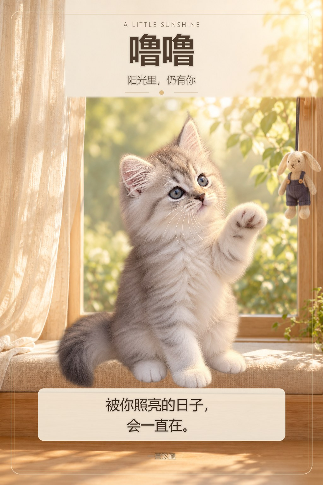
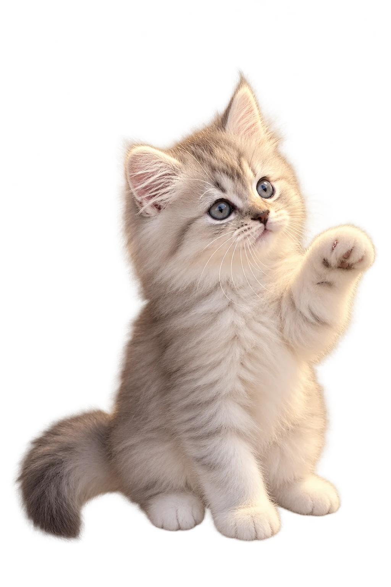

阳光里，仍有你
阳光里，仍有你。
轻轻拖动卡片，也可以碰一碰噜噜的小脑袋。


噜噜 · 一直被爱着
我记得你伸出小爪的认真，也记得你望过来时，眼睛里的光。
想你的时候，可以笑，也可以难过。那些一起度过的小小日常，我都会轻轻地留着。
你抬起的小爪，好像还在轻轻碰我的手。
卡面还在路上，可以先翻卡读信。
这一页已为你留住完整卡面。开启浏览器脚本后，还可以翻卡读信和轻轻互动。
仅保存在本机，分享链接不会带上留言；保存卡背图片可以把这句话一起留下。
手机上可以长按图片保存。
可以先长按这张卡面保存；翻卡寄语仍在页面里陪着你。